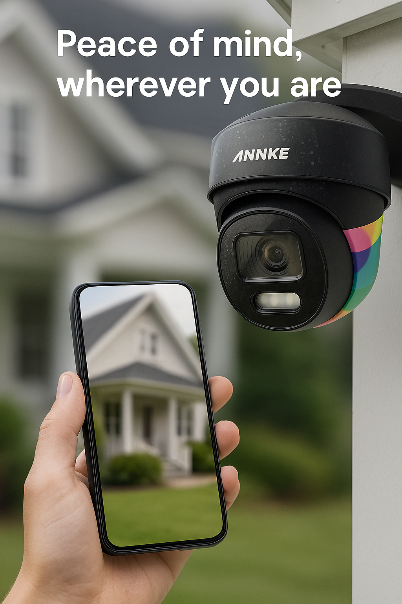
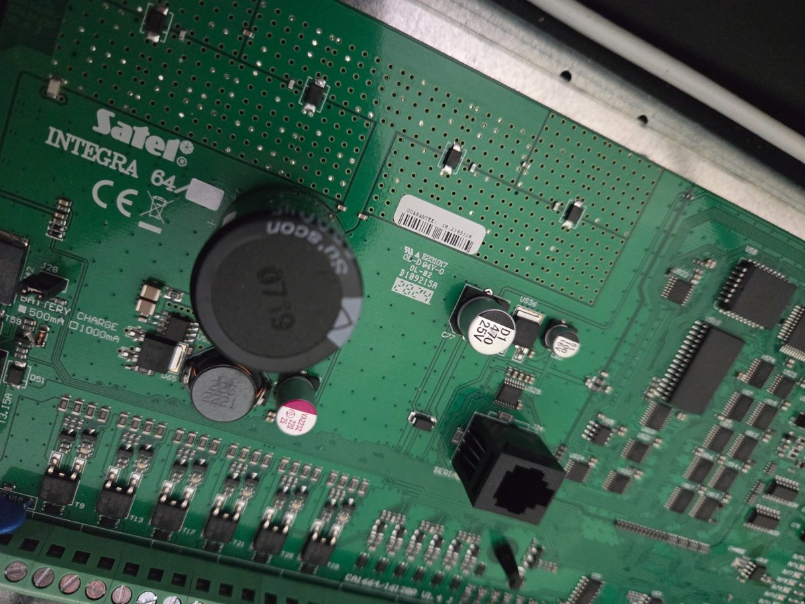
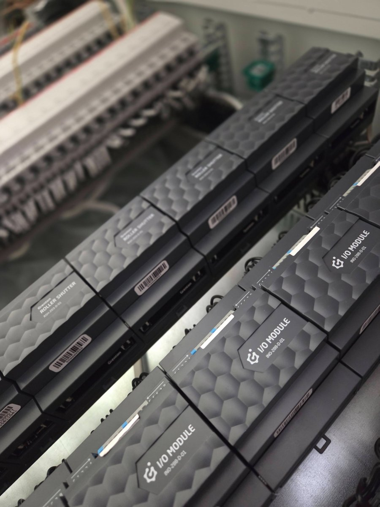
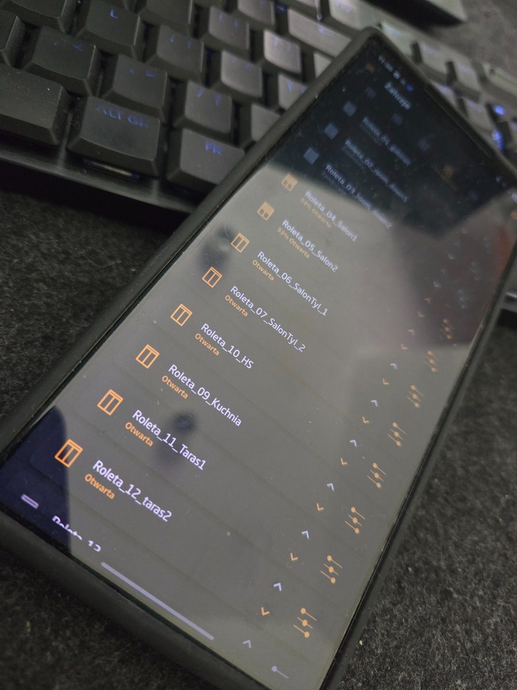
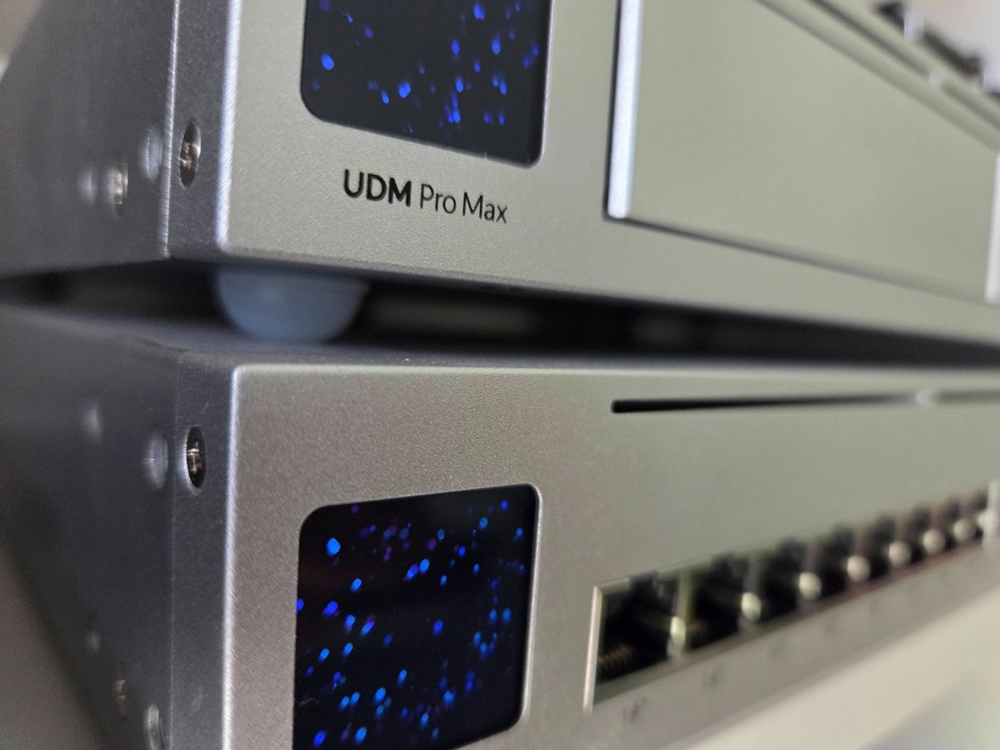

Bez protokołu – bez odszkodowania.
W przypadku pożaru lub awarii, to właśnie protokół z pomiarów instalacji decyduje, czy ubezpieczyciel wypłaci odszkodowanie.
Wykonuję pomiary rezystancji izolacji, skuteczności zerowania, pętli zwarcia – zarówno w istniejących domach (np. po zalaniu, zwarciu), jak i przy odbiorze nowego budynku. To nie tylko obowiązek – to Twój spokój i bezpieczeństwo.
Zobacz, zanim coś się stanie.
System monitoringu to nie tylko nagrania – to natychmiastowy podgląd Twojej przestrzeni z dowolnego miejsca.
Dzięki rozwiązaniom Annke i Hikvision możesz mieć podgląd z kamer na telefonie – w czasie rzeczywistym. Powiadomienia o ruchu, zapis nagrań, widok na dom, podjazd czy garaż – wszystko pod Twoją kontrolą.
Systemy Alarmowe SATEL
Zadbaj o bezpieczeństwo swojego domu z systemami alarmowymi SATEL.
Oferuję profesjonalny montaż central alarmowych, czujników ruchu, kontaktronów, sygnalizatorów oraz konfigurację powiadomień na telefon. System można rozbudować o integrację z automatyką budynkową i monitoringiem wizyjnym.
Smart Home – Grenton
Inteligentny dom dopasowany do Twojego stylu życia.
Projektuję i wykonuję kompleksowe instalacje Smart Home w technologii Grenton – od koncepcji i prowadzenia kabli po konfigurację aplikacji. Systemy mogą być zintegrowane z Home Assistant i sterowane z poziomu telefonu, tabletu lub przycisków ściennych.
 
Instalacje IT
Stabilna sieć to podstawa nowoczesnego domu.
Wykonuję wewnętrzne instalacje internetowe, światłowodowe i LAN, w oparciu o sprzęt Ubiquiti i rozwiązania zarządzalne. Zadbam o konfigurację routera, sieci Wi-Fi, podział VLAN i bezpieczne rozprowadzenie okablowania.
